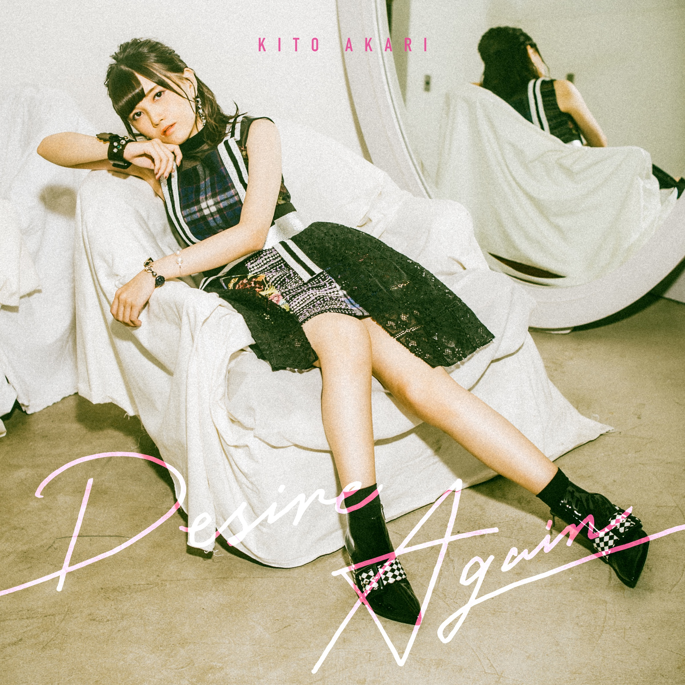

Favorite Song
Tiny Light
- Artist
- 鬼頭明里
- Year
- 2020
- Album
- Desire Again
这里填写这首歌的介绍、喜欢的原因、常听片段与相关记忆。
Add notes about this song: why I like it, favorite moments, listening keywords, and memories.

Favorite Song
这里填写这首歌的介绍、喜欢的原因、常听片段与相关记忆。
Add notes about this song: why I like it, favorite moments, listening keywords, and memories.